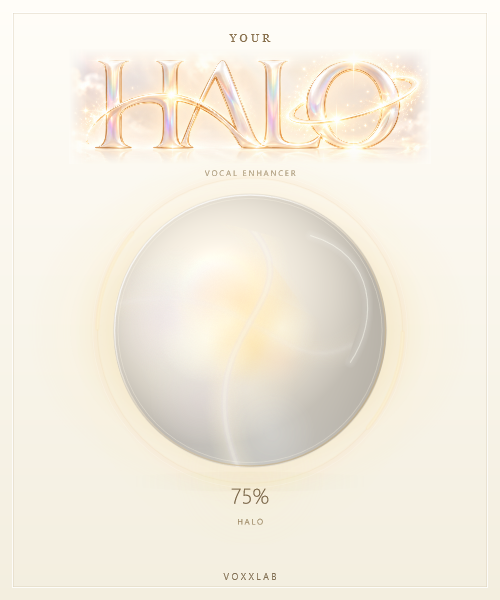

<!doctype html>
<html lang="en">
<meta charset="utf-8">
<meta name="viewport" content="width=device-width,initial-scale=1">
<title>YOUR HALO — living pearl preview</title>
<style>
*{box-sizing:border-box}body{margin:0;background:#f4efe5;color:#715c3d;font-family:Segoe UI,Arial,sans-serif}main{max-width:960px;margin:28px auto;padding:24px;display:flex;gap:42px;align-items:center}.visual{width:360px;max-width:100%;flex-shrink:0;box-shadow:0 20px 65px #89704b20}canvas,img{display:block;width:100%;height:auto}aside{flex:1;min-width:230px}h1{font:30px Georgia,serif;font-weight:400}p{line-height:1.65;font-size:14px}button,select{padding:11px 14px;border:1px solid #d7c6a8;background:#fffaf1;color:#715c3d;border-radius:6px;font:inherit;cursor:pointer}button{background:#f6e8ca}label{display:block;margin:16px 0 7px;font-size:12px;letter-spacing:.06em}input{width:100%;accent-color:#b69a62}a{color:#715c3d}.stages{display:flex;gap:5px;margin-top:20px;flex-wrap:wrap}.stages button{font-size:12px;padding:8px}.stages button.active{background:#e5cf9e}small{display:block;font-size:12px;line-height:1.6;color:#96815f}[hidden]{display:none!important}@media(max-width:740px){main{flex-direction:column;gap:16px;margin:0 auto}aside{max-width:500px;width:100%}}
</style>
<main>
<div class="visual"><canvas id="film" width="360" height="432" role="img" aria-label="Animated YOUR HALO JUCE interface"></canvas></div>
<aside>
<h1>Light that never stands still.</h1>
<p>Counter-moving caustics, orbiting pearl clouds and a changing luminous core inside a stable glass shell. These are actual JUCE captures, driven by the processor's real audio meter.</p>
<button id="play">Play 24-second sequence</button>
<p id="status" aria-live="polite">Idle · 0.0 / 24 seconds</p>
<input id="scrub" type="range" min="0" max="1439" value="0" aria-label="Animation frame">
<div class="stages"><button data-frame="0">Idle</button><button data-frame="360">Quiet</button><button data-frame="600">Normal</button><button data-frame="840">Strong</button><button data-frame="1080">Return to idle</button></div>
<label for="halo">EXPLORE STATIC CAPTURES · HALO</label><select id="halo"><option>0</option><option>25</option><option>50</option><option selected>75</option><option>100</option></select>
<label for="audio">INPUT ACTIVITY</label><select id="audio"><option value="0">Silence</option><option value="1">Quiet input</option><option value="2" selected>Normal input</option><option value="3">Strong input</option></select>
<p><a href="BeforeAfter.html">Before / after</a> · <a href="Report.md">Validation report</a></p>
<small>Sequence: HALO 90%, 60 FPS, 24 seconds. Idle 0–6 s; quiet 6–10 s; normal 10–14 s; strong 14–18 s; release and idle 18–24 s. The preview is silent. Open the VST3 in your DAW to hear the unchanged audio effect.</small>
</aside>
</main>
<script>
'use strict';
const film=document.querySelector('#film'),ctx=film.getContext('2d'),still=document.querySelector('#still'),play=document.querySelector('#play'),scrub=document.querySelector('#scrub'),status=document.querySelector('#status'),halo=document.querySelector('#halo'),audio=document.querySelector('#audio');
const stages=[{first:0,name:'Idle'},{first:360,name:'Quiet input'},{first:600,name:'Normal input'},{first:840,name:'Strong input'},{first:1080,name:'Release / idle'}];
const cache=new Map();let running=false,current=0,origin=0,lastDrawn=-1,drawRequest=0;
function load(n){if(cache.has(n))return cache.get(n);const promise=new Promise((resolve,reject)=>{const img=new Image();img.onload=()=>resolve(img);img.onerror=()=>reject(new Error('Unable to open captured frame '+n));img.src=`AnimationFrames/frame-${String(n).padStart(4,'0')}.png`});cache.set(n,promise);return promise}
function warm(n){const wanted=new Set();for(let i=0;i<36;i++){const k=(n+i)%1440;wanted.add(k);load(k).catch(()=>{})}for(const k of cache.keys())if(!wanted.has(k))cache.delete(k)}
function label(n){const stage=stages.filter(s=>n>=s.first).at(-1);status.textContent=`${stage.name} · ${(n/60).toFixed(1)} / 24 seconds · HALO 90%`;document.querySelectorAll('[data-frame]').forEach((b,i)=>b.classList.toggle('active',stages[i]===stage));scrub.value=n}
async function draw(n){const request=++drawRequest;try{const img=await load(n);if(request!==drawRequest)return;ctx.drawImage(img,0,0);lastDrawn=n;label(n)}catch(error){running=false;play.textContent='Play 24-second sequence';status.textContent=error.message}}
function showFilm(){film.hidden=false;still.hidden=true}
function stop(){running=false;play.textContent='Play 24-second sequence'}
function tick(now){if(!running)return;const elapsed=Math.floor((now-origin)*60/1000);current=Math.min(elapsed,1439);if(current!==lastDrawn){warm(current);draw(current)}if(elapsed>=1440){stop();return}requestAnimationFrame(tick)}
play.addEventListener('click',async()=>{if(running){stop();return}if(current>=1439)current=0;showFilm();play.disabled=true;try{warm(current);await Promise.all(Array.from({length:12},(_,i)=>load((current+i)%1440)));running=true;origin=performance.now()-current*1000/60;play.textContent='Pause';requestAnimationFrame(tick)}catch(error){status.textContent=error.message}finally{play.disabled=false}});
function seek(n){stop();current=n;showFilm();warm(n);draw(n)}
scrub.addEventListener('input',()=>seek(Number(scrub.value)));document.querySelectorAll('[data-frame]').forEach(b=>b.addEventListener('click',()=>seek(Number(b.dataset.frame))));
function staticCapture(){stop();drawRequest++;film.hidden=true;still.hidden=false;still.src=`Orb-HALO-${halo.value}-${audio.value}.png`;status.textContent=`HALO ${halo.value}% · ${audio.options[audio.selectedIndex].text}`}
halo.addEventListener('change',staticCapture);audio.addEventListener('change',staticCapture);warm(0);draw(0);
</script>
</html>
